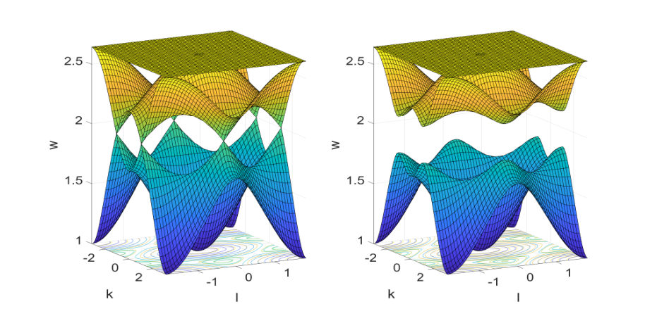
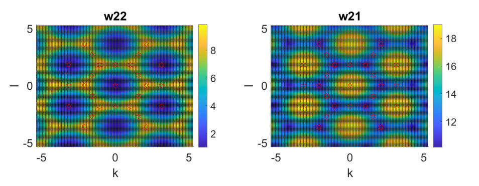
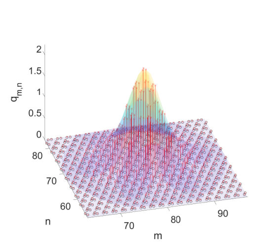
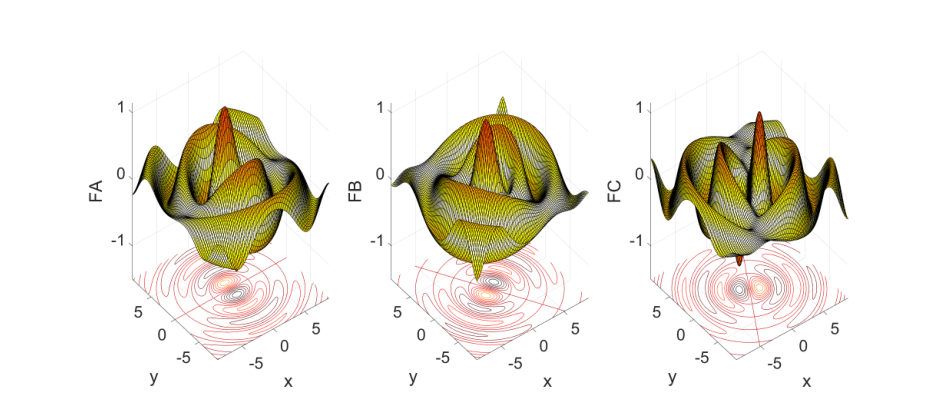

Show other secondary papers
A molecular perspective on coordination, screening, and emergent length scales in lithium electrolytes
Authors: A. Coste, E. Zunzunegui-Bru, A. van Roekeghem, I. Skarmoutsos, S. Mossa
Type: theory · Category: other · PDF: https://arxiv.org/pdf/2605.10089v1
Analysis basis: abstract only; PDF text extraction failed or PDF unavailable
Summary. This paper proposes a unified multiscale framework to understand lithium electrolytes, where local chemical coordination, mesoscopic clustering, and macroscopic transport are intrinsically coupled. It demonstrates how increasing concentration shifts the system from solvent-dominated coordination to complex, correlated ionic domains. This integrated view is essential for the rational design of next-generation battery electrolytes.
Why it may be interesting. not directly relevant
Detailed structure
Main problem. The breakdown of separate conceptual frameworks for coordination, screening, and transport in concentrated lithium electrolytes.
Main result. Development of a unified multiscale framework that links local coordination motifs to macroscopic transport through a single physical picture of correlated structures.
Method. A multiscale theoretical framework integrating local coordination chemistry, mesoscopic ionic organization, and macroscopic transport dynamics.
Model / system. Lithium electrolytes, including carbonate liquids, polymer electrolytes, concentrated systems, and electrolytes under confinement.
Key observables. Local coordination motifs, ionic pairing, clustering, screening, and macroscopic ionic transport.
Important parameters / regimes. Ion concentration, solvent-dominated vs. ion-pairing regimes, and mesoscale correlated domains.
Assumptions / limitations. The paper assumes that the evolution of electrolyte properties can be captured by linking short-range and long-range structural correlations.
Paper structure. The paper presents a perspective that moves from the limitations of dilute-regime frameworks to a unified multiscale model, using examples from various electrolyte types to demonstrate the coupling of coordination and transport.
Abstract
Lithium electrolytes are commonly described using separate conceptual frameworks for local coordination chemistry, electrostatic screening, and ionic transport. This separation is effective in dilute conditions but breaks down at higher concentration, where coordination, ion pairing, clustering, and collective dynamics become intrinsically coupled. In this Perspective, we develop a unified multiscale framework that links local coordination motifs, mesoscopic ionic organization, and macroscopic transport within a single physical picture. Through representative examples spanning carbonate liquids, polymer electrolytes, concentrated systems, and confinement, we show that increasing concentration drives a systematic evolution from solvent-dominated Li$^+$ coordination to ion pairing, clustering, and correlated domains. In this regime, screening and transport are not independent phenomena but arise from the same underlying correlated structures. This perspective implies that rational electrolyte design must simultaneously control short-range coordination, mesoscale organization, and collective electrostatic response.
An ab initio approach to energy alignment and charge-state prediction of adsorbates on ultrathin insulators
Authors: Kevin Lizárraga, Saba Taherpour, Cesar E. P. Villegas, Christoph Wolf
Type: theory · Category: other · PDF: https://arxiv.org/pdf/2605.08795v1
Analysis basis: abstract only; PDF text extraction failed or PDF unavailable
Summary. This paper introduces a computationally efficient theoretical framework for predicting how the energy levels of molecules or atoms shift when placed on thin oxide layers over metal. By breaking down complex interface physics into manageable parts, the method enables the high-throughput screening of molecular qubits and organic electronic interfaces.
Why it may be interesting. not directly relevant
Detailed structure
Main problem. Developing a predictive, computationally efficient first-principles approach to determine energy-level alignment and charge-state prediction for adsorbates on ultrathin insulators.
Main result. The authors present a theoretical framework that balances accuracy and cost by combining GW calculations, the integer charge transfer model, and electrostatic potential analysis to capture complex interface phenomena.
Method. The method utilizes quasiparticle GW calculations for ionization potentials and electron affinities, alongside an analysis of quasiparticle renormalization, the integer charge transfer model, and local electrostatic potential variations.
Model / system. The system consists of adsorbates (molecules or single atoms) physisorbed on ultrathin oxide layers supported on metal substrates.
Key observables. Ionization potentials, electron affinities, electronic bandgap polarization, Fermi-level pinning, and work function shifts.
Assumptions / limitations. The method assumes that the complex interface effects can be decomposed into individual physical processes like Pauli pushback and dipole-induced shifts.
Paper structure. The paper introduces the challenge of energy alignment in adsorbate-substrate systems, presents a new multi-step theoretical framework, details the specific physical components of the method (GW, charge transfer, and electrostatic shifts), and discusses applications for high-throughput screening.
Abstract
The rapid progress of electron spin resonance scanning tunneling microscopy experiments has enabled the manipulation of individual adsorbate spin states physisorbed on ultrathin oxide layers supported on metal substrates. Electron resonance requires unpaired spin density on the adsorbate, which can be achieved, for instance, through charge transfer from the supporting substrate. This requires the correct energy-level alignment between the energy levels of the adsorbate and the Fermi energy of the substrate. Experiments on molecules and single atoms adsorbed on metal-insulator systems have revealed complex phenomena, including electronic bandgap narrowing, charge transfer, Fermi-level pinning, and the re-ordering of adsorbate orbitals after charge transfer. Despite these advances, a predictive first-principles approach based on accurate methods such as quasiparticle GW, capable of capturing these effects without the prohibitive cost of full adsorbate/oxide/metal simulations, remains an open challenge. In this work, we present a theoretical approach to determine the energy-level alignment of adsorbates on oxide/metal substrates. Our method transparently exposes all physical processes and strikes a balance between computational cost and accuracy. Ionization potentials and electron affinities of the isolated adsorbates are obtained using GW calculations, electronic bandgap polarization is quantified through the quasiparticle renormalization caused by the substrate, Fermi-level pinning is evaluated within the integer charge transfer model, and work function shifts arising from Pauli pushback or from the adsorbate-metal dipole are determined from the local variations of the electrostatic potential. This computationally efficient framework paves the way for highthroughput screening of molecular qubits and organic electronic interfaces.
Angle-Resolved Cryogenic Brillouin-Mandelstam Spectroscopy of Surface and Bulk Acoustic Phonons in Diamond
Authors: Jordan Teeter, Dylan Wright, Nidhish Thiruthukkal Puthenveettil, Fariborz Kargar, Alexander A. Balandin
Type: experiment · Category: other · PDF: https://arxiv.org/pdf/2605.08987v1
Analysis basis: abstract only; PDF text extraction failed or PDF unavailable
Summary. This paper uses Brillouin-Mandelstam spectroscopy to measure the properties of acoustic phonons in diamond at cryogenic and room temperatures. It demonstrates that these surface phonons are remarkably stable against temperature changes, which is crucial for the development of reliable diamond-based quantum sensors and electronic devices.
Why it may be interesting. not directly relevant
Detailed structure
Main problem. The study aims to characterize the temperature dependence of surface and bulk acoustic phonons in diamond for applications in quantum sensing and thermal transport modeling.
Main result. The researchers found that all measured surface acoustic phonons (Rayleigh, shear horizontal, and pseudo-longitudinal waves) exhibit a very weak temperature dependence, with a maximum change of only 1.6% between 10 K and 300 K.
Method. Angle-resolved Brillouin-Mandelstam light-scattering spectroscopy was used to monitor phonon frequencies and phase velocities.
Model / system. The physical system is diamond crystal, specifically investigating phonon propagation along the <100> and <110> crystallographic directions across a temperature range of 10 K to 300 K.
Key observables. Frequencies and phase velocities of Rayleigh waves, shear horizontal waves, and high-frequency pseudo-longitudinal waves.
Important parameters / regimes. Temperature range (10 K to 300 K) and crystallographic directions (<100> and <110>).
Paper structure. The paper presents an experimental investigation using spectroscopy to measure phonon properties in diamond as a function of temperature and crystallographic orientation.
Abstract
We used angle-resolved Brillouin-Mandelstam light-scattering spectroscopy to monitor surface and bulk acoustic phonons in diamond along the <100> and <110> crystallographic directions across a temperature range from 10 K to 300 K. The frequencies and phase velocities were measured for three types of surface acoustic phonons: Rayleigh waves, shear horizontal waves, and high-frequency pseudo-longitudinal waves. All surface acoustic phonons exhibit weak temperature dependence, with the largest observed change of 1.6% across the examined temperature range. The frequencies of all three types of surface acoustic phonons agree with the theoretical values within the experimental uncertainty. Cryogenic surface-acoustic-phonon data are important for diamond-based quantum sensors, surface acoustic wave devices, and other electronic technologies. Knowledge of surface acoustic phonons can also be used for developing accurate models for thermal transport between interfaces.
Anomalous and diode Josephson effect in junctions with inhomogeneous ferromagnetic barrier and interfacial Rashba spin-orbit coupling
Authors: Stevan Djurdjević, Zorica Popović
Type: theory · Category: other · PDF: https://arxiv.org/pdf/2605.10740v1
Analysis basis: abstract only; PDF text extraction failed or PDF unavailable
Summary. This paper theoretically explores how broken symmetries in Josephson junctions with ferromagnetic barriers and spin-orbit coupling can lead to diode-like nonreciprocal transport. The authors show that by precisely tuning magnetic and orbital orientations, the diode effect can be significantly enhanced. The study also highlights the critical role of Andreev bound states and continuum states in determining the transport properties.
Why it may be interesting. not directly relevant
Detailed structure
Main problem. Investigating the conditions and mechanisms for the emergence of anomalous and diode Josephson effects in planar 2D junctions.
Main result. Identified minimal symmetry-breaking conditions and demonstrated that tuning exchange fields, Rashba SOC, and order parameter orientation can enhance nonreciprocity by over 40%.
Method. Systematic symmetry analysis of the junction Hamiltonian combined with numerical calculations of the current-phase relation using a generalized Furusaki-Tsukada approach.
Model / system. Planar two-dimensional Josephson junctions featuring two ferromagnets with arbitrary exchange field orientations, Rashba spin-orbit coupling at the interfaces, and s-wave or d-wave superconducting electrodes.
Key observables. Current-phase relation (CPR), Andreev bound states (ABS) spectrum, critical currents, and nonreciprocal transport characteristics.
Important parameters / regimes. Exchange field directions, Rashba spin-orbit coupling strength, superconducting order parameter orientation (s-wave vs d-wave), and phase difference.
Assumptions / limitations. The study assumes a planar 2D geometry and focuses on the interplay of broken time-reversal and space-inversion symmetries.
Paper structure. The paper begins with a symmetry analysis of the junction Hamiltonian, followed by a classification of junction types, numerical calculation of the CPR, an analysis of the ABS spectrum, and a comparison of ABS and continuum state contributions.
Abstract
We theoretically investigate the anomalous and diode Josephson effects in planar two-dimensional Josephson junctions with arbitrarily oriented exchange fields in two ferromagnets within the barrier, and spin-orbit coupling at the superconductor/ferromagnet interfaces, where the superconducting electrodes can have $s$-wave or arbitrarily oriented $d$-wave order parameter lobes. We perform a systematic symmetry analysis of the junction Hamiltonian and identify the minimal conditions for breaking time-reversal and space-inversion symmetries, which are required for the emergence of anomalous and diode Josephson effects. We classify the junctions into three classes, with particular attention to those between $d_{x^2-y^2}$ and $d_{xy}$ oriented superconductors. Our symmetry analysis is supported by numerical calculations of the current-phase relation (CPR) obtained using a generalized Furusaki-Tsukada (F-T) approach. By tuning the directions of exchange fields in the ferromagnets, Rashba SOC at the interfaces and superconducting order parameter orientations, nonreciprocity can be enhanced by more than 40\%. We further analyze the phase-dependent Andreev bound states (ABS) spectrum and their contribution to charge transport, as well as their signatures in the nonreciprocal transport characteristics. By comparing the current carried by ABS with that obtained using the F-T technique, we find that the contribution from continuum states above the gap becomes pronounced in presence of zero energy crossings in the ABS spectrum, and in junctions with $d$-wave superconducting electrodes due to the narrower superconducting gap, which may become closed. In the nonreciprocal regime, the ABS spectra show an asymmetric profile with respect to phase inversion, indicating the presence of a finite current at zero phase difference and unequal critical currents in opposite directions.
Antisymmetric linear transverse magnetization and ferroaxial moments induced by geometry-driven electric field gradients
Authors: Akane Inda, Satoru Hayami
Type: theory · Category: other · PDF: https://arxiv.org/pdf/2605.09966v1
Analysis basis: abstract only; PDF text extraction failed or PDF unavailable
Summary. This paper shows that the shape of a finite system can create electric field gradients that induce unconventional magnetic responses. These induced transverse magnetizations are linear with the electric field, making them easier to detect experimentally than longitudinal responses.
Why it may be interesting. not directly relevant
Detailed structure
Main problem. Investigating how electric field gradients arising from the geometry of finite systems can induce transverse magnetization and ferroaxial moments.
Main result. The study demonstrates that geometry-induced electric field gradients generate antisymmetric, linear-in-magnetic-field transverse magnetization, a response otherwise prohibited by Onsager reciprocity.
Method. The authors utilize the Kubo formalism and real-time numerical simulations.
Model / system. A finite trapezoidal model where the leg inclination is used to control the strength of the electric field gradient.
Key observables. Transverse magnetization, ferroaxial moments, and longitudinal magnetization.
Important parameters / regimes. Electric field gradient strength (controlled by leg inclination), electric field strength, and magnetic field strength.
Assumptions / limitations. The system is treated as a finite mesoscopic system with specific geometric constraints.
Paper structure. The paper presents a theoretical investigation using Kubo formalism and numerical simulations to show the generation and enhancement of magnetization and ferroaxial moments via geometric gradients.
Abstract
We theoretically investigate the transverse magnetization and ferroaxial moments induced by electric field gradients arising from the geometry of finite systems. Based on the Kubo formalism and real-time numerical simulations for a finite trapezoidal model, we demonstrate that both quantities are generated under the electric field gradient and are enhanced by tuning the leg inclination, which controls the gradient strength. We further show that the induced transverse magnetization is antisymmetric and linear in the magnetic field; such a response is prohibited by Onsager reciprocity in the absence of an electric field gradient. In addition, we find that the total transverse magnetization scales linearly with the electric field, in contrast to the longitudinal one, which exhibits a quadratic dependence, providing an advantage for experimental observation. Our results establish geometry-induced electric field gradients as a versatile mechanism for realizing and controlling unconventional transverse responses in mesoscopic systems.
Asymptotic Analysis of discrete nonlinear localised modes in a Kagome lattice
Authors: Jonathan AD Wattis, Pilar R Gordoa, Andrew Pickering
Type: theory · Category: other · PDF: https://arxiv.org/pdf/2605.10231v1
Analysis basis: full PDF text, analyzed in chunks





Summary. This paper uses asymptotic analysis to derive effective nonlinear Schrödinger equations for wave envelopes in a Kagome lattice. It identifies novel coupled NLS systems and demonstrates the existence of robust, vortex-like solitary wave solutions. The findings provide a theoretical framework for understanding nonlinear wave dynamics in complex lattice geometries.
Why it may be interesting. not directly relevant
Detailed structure
Main problem. The study investigates the existence, properties, and stability of discrete nonlinear localized modes (breathers) and solitary waves in a Kagome lattice.
Main result. The authors derive various reductions to Nonlinear Schrödinger (NLS) equations, including a novel system of coupled 2+1D NLS equations at the intersection of the flat and optical bands, and identify vortex-like solitary wave solutions.
Method. The research employs multiple scales asymptotic expansion, Lie symmetry analysis for PDE reduction, and numerical integration using the Verlet algorithm.
Model / system. A Kagome lattice with nonlinear Klein-Gordon interactions, featuring linear nearest-neighbor coupling and a nonlinear on-site potential at each node.
Key observables. Dispersion relations (flat, acoustic, and optical bands), energy distribution, lattice node displacements, and conserved quantities like norm (charge) and energy.
Important parameters / regimes. Small nonlinearity parameter (beta), coupling strengths (gamma and lambda), and the frequency of oscillations.
Assumptions / limitations. The analysis assumes small-amplitude, weakly nonlinear oscillations and a single scalar unknown at each node with linear nearest-neighbor interactions.
Figures summary. Figure 1 shows the Kagome lattice structure; Figure 2 compares dispersion surfaces with and without Dirac points; Figure 3 shows contour plots of dispersion surfaces; Figure 4 illustrates a Townes soliton; Figure 5 and 6 show vector field components and intensity of vortex-like solutions; Figure 7 provides numerical validation of the asymptotic approximation.
Paper structure. The paper begins with the definition of the Kagome lattice model and dispersion relation, proceeds to derive NLS reductions via asymptotic analysis for various critical points, applies Lie symmetry analysis to find similarity reductions for the coupled NLS system, and concludes with numerical simulations to validate the predicted localized modes.
Abstract
We describe a nonlinear kagome lattice with nonlinear dynamics described by Klein-Gordon interactions with a scalar unknown at each node, such as might occur in a nonlinear electrical lattice. We show that the dispersion relation has three bands - a flat band and two other surfaces which may meet in Dirac points or be separated by a gap. By using multiple scales asymptotic methods, we find a variety of reductions to nonlinear Schrodinger (NLS) systems, some of which are similar to those obtained previously, and have the Townes soliton as a solution. We find a novel system of coupled NLS equations, by forming an asymptotic expansion for small amplitude weakly nonlinear waves around the point where the flat band meets the upper surface of the dispersion relation. We analyse this 2+1 dimensional system using Lie symmetries, and find further reductions to more complicated solitary wave solutions. Numerical simulations of the wave are also presented.
Band alignment of grafted diamond/GaN p-n heterojunctions interfaced with ALD Al2O3 and SiNx/Al2O3
Authors: Tsung-Han Tsai, Chenyu Wang, Jiarui Gong, Xuanyu Zhou, Luke Suter, Aaron Hardy, Carolina Adamo, Yang Liu, Dong Liu, Connor S Bailey, Michael Eller, Stephanie Liu, Matthias Muehle, Jung-Hun Seo, Katherine Fountaine, Vincent Gambin, Zhenqiang Ma
Type: experiment · Category: other · PDF: https://arxiv.org/pdf/2605.09108v1
Analysis basis: abstract only; PDF text extraction failed or PDF unavailable
Summary. This study investigates how adding a SiNx layer to diamond/GaN heterojunctions can tune the band alignment. By using XPS, the researchers found that this engineering approach increases the band offset, providing a method to control the rectifying characteristics of p-n diodes.
Why it may be interesting. not directly relevant
Detailed structure
Main problem. Determining the band alignment of grafted diamond/GaN heterojunctions and understanding how interfacial layer engineering affects band offsets.
Main result. Both diamond/Al2O3/GaN and diamond/Al2O3/SiNx/GaN exhibit type-II band alignment, with the SiNx-containing structure showing band offsets 0.42 eV larger due to modified interfacial electrostatic potential.
Method. X-ray photoelectron spectroscopy (XPS) was used to measure the band offsets and analyze the interfacial electronic structure.
Model / system. Grafted diamond/GaN heterojunctions interfaced with ALD-grown Al2O3 and SiNx/Al2O3 dielectric layers.
Key observables. Band offsets, interfacial electrostatic potential, and density of positive fixed charges.
Important parameters / regimes. Band offset difference of 0.42 eV; presence of SiNx interlayer.
Assumptions / limitations. The difference in offsets is attributed to a reduction in the density of positive fixed charges in the dielectric layer.
Paper structure. The paper introduces the motivation for diamond/GaN junctions, describes the experimental fabrication of the heterostructures, presents the XPS results for band alignment, discusses the impact of the SiNx layer on electrostatic potential, and concludes with implications for diode design.
Abstract
Diamond and gallium nitride are complementary semiconductors for forming p-n junctions because of their respective doping limitations. Understanding the band alignment of grafted diamond/GaN heterojunctions is therefore essential for optimizing diode performance. In this study, the band alignment of diamond/Al2O3/GaN and diamond/Al2O3/SiNx/GaN heterostructures was determined by X-ray photoelectron spectroscopy. Both structures exhibit type-II band alignment, but with different band offsets. The band offsets of the diamond/Al2O3/SiNx/GaN heterojunction are larger by 0.42 eV than those of diamond/Al2O3/GaN. This difference is attributed to a modification of the interfacial electrostatic potential, which may arise from a reduced density of positive fixed charges in the interfacial dielectric near the diamond/Al2O3 interface after insertion of the SiNx layer. These results demonstrate that interfacial-layer engineering provides an effective strategy for tailoring the band alignment of grafted diamond/GaN heterojunctions, offering guidance for the design of p-n diodes with tunable rectifying characteristics.
Beyond the Black Box: An Interpretable Machine Learning Framework for Predicting Electronic Structure Microdescriptors and Structure-Performance Relationships in Fe-based Catalytic Systems
Authors: Oyinkansola Romiluyi
Type: theory · Category: disordered systems and neural networks · PDF: https://arxiv.org/pdf/2605.08994v1
Analysis basis: abstract only; PDF text extraction failed or PDF unavailable
Summary. This paper develops an interpretable machine learning framework to predict the electronic properties and performance of iron-based catalysts. By using Explainable AI, the study identifies specific structural and thermodynamic features that govern catalytic activity, providing a pathway for accelerated, automated catalyst design.
Why it may be interesting. not directly relevant
Detailed structure
Main problem. The bottleneck in catalyst discovery for methane conversion due to expensive trial-and-error and the lack of interpretable frameworks linking complex design spaces to performance.
Main result. An interpretable ML framework successfully identifies thermodynamic lattice stability and geometric factors as the primary drivers of the electronic band gap, significantly outperforming linear models.
Method. Integration of SHAP-based Explainable AI with tree-based ensembles, specifically Random Forest and Bayesian-optimized CatBoost.
Model / system. Fe-zeolite and oxide-supported catalysts used for the partial oxidation of methane (POM), focusing on electronic band gap and microdescriptors.
Key observables. Electronic band gap, selectivity, activity, and stability.
Important parameters / regimes. Thermodynamic lattice stability, geometric microdescriptors, and structural/thermodynamic features.
Assumptions / limitations. The electronic band gap serves as a reliable proxy for redox reactivity.
Paper structure. The paper introduces a bottleneck in catalyst development, presents an interpretable ML framework using SHAP and tree-based ensembles, demonstrates the identification of key physical microdescriptors, and discusses the integration of these findings into digital twins for autonomous R&D.
Abstract
The current catalyst discovery and development pipeline for energy-intensive applications like methane conversion remains bottlenecked by expensive trial-and-error experimentation, irreproducible chemical intuition, and a lack of frameworks linking complex catalytic design spaces to performance. This work presents an interpretable machine learning framework that integrates SHAP-based feature importance analysis (Explainable AI) with tree-based ensembles (Random Forest and Bayesian-optimized CatBoost) to characterize Fe-zeolite and oxide-supported catalysts for the partial oxidation of methane (POM). Despite limited data, the framework decodes complex structure-performance relationships by identifying and ranking thermodynamic, structural, and geometric microdescriptors that influence the electronic band gap and govern macroscale performance metrics such as selectivity, activity, and stability. This work explicitly demonstrates that thermodynamic lattice stability and geometric factors are the primary drivers of electronic band gap (a critical proxy for redox reactivity) rather than bulk stoichiometry. Non-linear models achieve an R2 of 0.61 - 0.77, significantly outperforming traditional linear baselines (R2 = 0.32). This workflow provides both a light-weight generalizable methodology and a prioritized list of physical features for accelerated catalyst screening - and these features can subsequently be integrated into microkinetic and reaction engineering models to create digital twins of complex reactor systems and to enable predictive optimization in autonomous R&D laboratories.
Bond strengths in solids computed from a Wannier-type construction of local vibrational modes
Authors: Mateusz Mojsak, Elfi Kraka, Adam A. L. Michalchuk
Type: theory · Category: other · PDF: https://arxiv.org/pdf/2605.08948v1
Analysis basis: abstract only; PDF text extraction failed or PDF unavailable
Summary. The paper presents a new theoretical framework to define localized vibrational modes in crystals using a Wannier-type approach. This allows for a chemically intuitive way to measure bond strengths in periodic systems, bridging the gap between molecular local mode theory and solid-state physics. The method is successfully demonstrated on several representative materials like Si, SiC, and CaCO3.
Why it may be interesting. not directly relevant
Detailed structure
Main problem. The difficulty of defining real-space localized vibrational modes and chemically interpretable bond strengths in periodic crystalline solids without gauge-dependency issues.
Main result. A new Wannier-type formulation for periodic local vibrational mode theory that provides smooth, gauge-consistent, and real-space-localized modes for calculating bond and interaction strengths.
Method. A Wannier-type construction using locally coherent superpositions of wavevector-resolved local modes to create a real-space representation.
Model / system. Crystalline solids including ionic and covalent systems such as MgO, tetrahedrally-coordinated C, Si, SiC, and two polymorphs of CaCO3.
Key observables. Force constants, vibrational frequencies, and bond/interaction strengths.
Important parameters / regimes. Phonon dispersion behavior and internal coordinates.
Assumptions / limitations. The method assumes the ability to construct modes from wavevector-resolved local modes in a periodic lattice.
Paper structure. Introduction of the Wannier-type formulation, description of the construction of localized modes, demonstration of the method on specific ionic and covalent systems, and discussion of the implications for bonding analysis.
Abstract
We introduce a Wannier-type formulation of periodic local vibrational mode theory that yields real-space-localized vibrational modes associated with individual internal coordinates in crystalline solids. These modes are constructed as locally coherent superpositions of wavevector-resolved local modes, yielding a smooth and gauge-consistent real-space representation without the need for additional phase-fixing procedures. The resulting Wannier-type local modes provide well-defined force constants and frequencies that enable robust, chemically interpretable measures of bond and interaction strengths in periodic systems. Moreover, our framework demonstrates that phonon dispersion behavior makes important contributions to the bond and interaction strengths calculated via local vibrational mode theory. We demonstrate the method for representative ionic and covalent systems, including MgO, tetrahedrally-coordinated C, Si, SiC, and two polymorphs of CaCO3. Our framework establishes a direct analog of molecular local modes for fully periodic systems and opens new avenues for quantitative bonding analysis in crystalline materials.
Characterizing Dislocation Substructures in Creep-Deformed Olivine Using Electron Channeling Contrast Imaging
Authors: M. Haroon Qaiser, Jessica White, David Wallis, T. Ben Britton
Type: experiment · Category: other · PDF: https://arxiv.org/pdf/2605.09398v1
Analysis basis: abstract only; PDF text extraction failed or PDF unavailable
Summary. This paper demonstrates a new imaging workflow using Electron Channeling Contrast Imaging (ECCI) to study dislocation structures in bulk olivine. This method provides higher resolution and less destructive analysis than traditional methods, helping to better parameterize models of mantle rheology and plate tectonics.
Why it may be interesting. not directly relevant
Detailed structure
Main problem. Characterizing dislocation substructures in olivine is challenging because traditional TEM requires extensive sample preparation and oxidation decoration lacks sufficient spatial resolution.
Main result. The application of an ECCI workflow based on SA-ECPs successfully reveals complex subgrain boundaries, surface threading dislocations, and dislocation loops in bulk olivine.
Method. The researchers used Electron Channeling Contrast Imaging (ECCI) combined with Electron Backscatter Diffraction (EBSD) and weighted Burgers vector (WBV) mapping.
Model / system. A single crystal of San Carlos olivine that has undergone high-temperature creep deformation.
Key observables. Subgrain boundaries, surface threading dislocations, dislocation loops, and dislocation density/arrangements.
Important parameters / regimes. High-temperature creep deformation regime; dislocation types and Burgers vectors.
Figures summary. ECCI micrographs showing subgrain boundaries, threading dislocations, and dislocation loops.
Paper structure. Introduction to olivine importance; comparison of imaging techniques; description of the ECCI/EBSD/WBV workflow; application to creep-deformed olivine; discussion of observed dislocation structures and implications for constitutive laws.
Abstract
Olivine is the dominant mineral in Earth's upper mantle and therefore controls mantle rheology and the mechanics of plate tectonics. The constitutive laws for dislocation-mediated deformation of olivine depend on the nature, density, and arrangements of dislocations within crystals. Hence, imaging and characterizing these defects is important, albeit challenging. Traditional imaging approaches involve (1) transmission electron microscopy (TEM), which samples small areas and requires extensive preparation and (2) oxidation decoration methods that have low spatial resolution and cannot distinguish dislocations of opposite Burgers vectors. Here, we apply electron channeling contrast imaging (ECCI) to unlock insight into the deformation structures within olivine, and combined with electron backscatter diffraction (EBSD) and weighted Burgers vector (WBV) mapping as an informative route to characterize dislocation substructures in bulk materials. Specifically, we have used an ECCI workflow based on selected-area electron channeling patterns (SA-ECPs) and we apply this workflow to a single crystal of San Carlos olivine that was deformed by creep at high temperature. ECCI micrographs reveal subgrain boundaries, surface threading dislocations, and dislocation loops across representative areas. The observations demonstrate that this workflow can reliably reveal the complexity of subgrain boundaries in olivine, which can host multiple dislocation types and exhibit non-planar geometries. Despite the limited number of slip systems in olivine, subgrain boundaries can form complex, mixed assemblies. Overall, such observations can provide a variety of constraints on dislocation types, morphologies, and distributions, which are required to parameterize and calibrate models of transient and steady-state dislocation creep in olivine and other materials.
CrystalREPA: Transferring Physical Priors from Universal MLIPs to Crystal Generative Models
Authors: Chengqian Zhang, Yucheng Jin, Duo Zhang, Tiejun Li, Han Wang
Type: theory · Category: disordered systems and neural networks · PDF: https://arxiv.org/pdf/2605.08960v1
Analysis basis: abstract only; PDF text extraction failed or PDF unavailable
Summary. The paper introduces CrystalREPA, a method to improve crystal generation by aligning generative models with the physical priors found in machine learning interatomic potentials. This approach enhances the stability and accuracy of generated materials without increasing inference cost. It also reveals that the utility of a teacher model depends on its representation space rather than standard accuracy metrics.
Why it may be interesting. not directly relevant
Detailed structure
Main problem. Crystal generative models lack explicit supervision regarding thermodynamic stability, leading to a representation gap between generative encoders and physics-aware interatomic potentials.
Main result. The CrystalREPA framework successfully transfers stability-aware priors from MLIPs to generative models, improving the thermodynamic stability and structural validity of generated crystals.
Method. A plug-and-play alignment framework using an element-aware contrastive objective to align atom-wise hidden states of generative encoders with frozen MLIP representations.
Model / system. The study focuses on crystal generative models and universal machine learning interatomic potentials (MLIPs) used for predicting the properties of crystalline structures.
Key observables. Thermodynamic stability, structural validity, and structural fidelity of generated crystals.
Important parameters / regimes. The distinguishability of the MLIP's atom-wise representation space.
Assumptions / limitations. The effectiveness of the transfer depends on the representation space of the MLIP teacher rather than its leaderboard accuracy.
Paper structure. The paper identifies a representation gap via energy probing, introduces the CrystalREPA alignment framework, evaluates it across multiple generative frameworks and MLIP teachers, and provides a new criterion for selecting MLIP teachers based on representation distinguishability.
Abstract
Crystal generative models mainly learn what stable crystals look like, with little explicit supervision for what makes them stable. We reveal a substantial representation gap between state-of-the-art crystal generative models and pretrained universal machine learning interatomic potentials (MLIPs) via energy probing, and show this gap can be closed by a simple training-time alignment. We propose Crystal REPresentation Alignment (CrystalREPA), a plug-and-play framework that aligns the atom-wise hidden states of generative encoders with frozen MLIP representations through an element-aware contrastive objective, transferring stability-aware atomistic priors with marginal training overhead and no additional inference cost. Across three generative frameworks, ten MLIP teachers, and two benchmark datasets, CrystalREPA consistently improves the thermodynamic stability, structural validity, and structural fidelity of generated crystals. Equally important, we find that an MLIP's transfer effectiveness is poorly predicted by its accuracy on standard leaderboards (e.g., Matbench Discovery) but strongly predicted by the distinguishability of its atom-wise representation space, yielding a practical, accuracy-independent criterion for selecting MLIP teachers for generative transfer.
Data-driven body-centered cubic phase prediction in cobalt free high-entropy alloys
Authors: Xuliang Luo, Yulin Li, Tero Mäkinen, Silvia Bonfanti, Wenyi Huo, Mikko J. Alava
Type: theory · Category: disordered systems and neural networks · PDF: https://arxiv.org/pdf/2605.10539v1
Analysis basis: abstract only; PDF text extraction failed or PDF unavailable
Summary. This paper presents a machine learning approach to predict the phase stability of cobalt-free high-entropy alloys. By using GANs to augment limited experimental data, the authors developed a model that accurately identifies the key physical parameters driving BCC phase formation. This work demonstrates how data-driven methods can accelerate the discovery of materials for advanced applications like nuclear engineering.
Why it may be interesting. not directly relevant
Detailed structure
Main problem. Predicting the phase stability (specifically the body-centered cubic phase) of cobalt-free high-entropy alloys (HEAs) due to their complex compositions.
Main result. A Gaussian process classification model achieved 84% accuracy in predicting BCC phase stability, identifying mixing enthalpy and atomic size difference as the primary descriptors.
Method. Integration of six semiempirical parameters with machine learning, utilizing Generative Adversarial Networks (GANs) for data augmentation and principal component analysis for dimensionality reduction.
Model / system. Cobalt-free high-entropy alloys (HEAs), characterized by six semiempirical parameters: mixing entropy, mixing enthalpy, atomic size difference, valence electron concentration, d-orbital energy level, and the Omega parameter.
Key observables. BCC phase stability/formation
Important parameters / regimes. Mixing enthalpy (ΔHmix), atomic size difference (δ), mixing entropy (ΔSmix), valence electron concentration (VEC), d-orbital energy level (Md), and the Ω parameter.
Assumptions / limitations. The use of semiempirical parameters is sufficient to capture the underlying physics of phase formation in these complex alloys.
Paper structure. The paper introduces the problem of Co-free HEAs, describes the feature engineering using semiempirical parameters, details the use of GANs for data augmentation, presents the Gaussian process classification results, and concludes with the identification of key descriptors.
Abstract
High-entropy alloys (HEAs) are known for superb combination of performance attributes, making them ideal for advanced applications, e.g., nuclear engineering. The concept of cobalt-free HEAs aims to mitigate concerns about cobalt's radioactivity, however, predicting their phase formation remains challenging due to their complex compositions. In this work, we integrate six semiempirical parameters, i.e., mixing entropy (ΔSmix), mixing enthalpy (ΔHmix), atomic size difference (δ), valence electron concentration (VEC), d-orbital energy level (Md), and the Ω parameter, along with machine learning (ML) to predict the body-centered cubic phase stability in Co free HEAs. To address the limitations of experimental data, generative adversarial networks were used to augment the dataset, thus improving the accuracy of the Gaussian process classification model used for phase prediction. After dimensionality reduction to five principal components, the model achieved an accuracy of 84%, with ΔHmix and δ identified as the key descriptors influencing phase formation. This approach highlights the synergy of ML and data augmentation in accelerating the design of HEAs for advanced applications.
Emergent Quantum-Geometric Equivalence of Injection and Shift Currents
Authors: Mohammad Yahyavi, Tay-Rong Chang, Md Shafayat Hossain, Arun Bansil, Naoto Nagaosa, Guoqing Chang
Type: theory · Category: other · PDF: https://arxiv.org/pdf/2605.08643v1
Analysis basis: abstract only; PDF text extraction failed or PDF unavailable
Summary. This paper demonstrates that injection and shift currents, previously thought to be distinct, are actually equivalent in certain regimes due to shared quantum-geometric properties. This finding provides a unified framework for interpreting nonlinear optical experiments in topological materials like Weyl semimetals.
Why it may be interesting. not directly relevant
Detailed structure
Main problem. The paper addresses the perceived distinction between injection and shift currents as separate nonlinear optical responses with different microscopic origins.
Main result. The authors uncover a hidden connection between injection and shift currents through interband Berry-curvature and quantum-metric dipoles, demonstrating an emergent equivalence in systems with linear dispersion.
Method. Theoretical derivation of nonlinear optical responses using the framework of interband Berry-curvature and quantum-metric dipoles.
Model / system. The study focuses on systems with approximately linear electronic dispersion near the Fermi level, specifically Dirac and Weyl semimetals and strained graphene.
Key observables. Injection current, shift current, and interband quantum-geometric dipole.
Important parameters / regimes. Low photon energies and systems with approximately linear electronic dispersion near the Fermi level.
Assumptions / limitations. The equivalence is specifically sharp in the regime of linear electronic dispersion and low photon energies.
Paper structure. The paper introduces the problem of distinct optical responses, presents the theoretical derivation of the connection via quantum geometry, applies the findings to Dirac/Weyl semimetals and graphene, and concludes with the implications for a new framework in nonlinear optics.
Abstract
Injection and shift currents are generally regarded as distinct nonlinear optical responses with separate microscopic origins. Here, we uncover a general hidden connection between them through interband Berry-curvature and quantum-metric dipoles. In systems with approximately linear electronic dispersion near the Fermi level and at low photon energies, this relation sharpens into an emergent equivalence, with injection and shift currents governed by the same interband quantum-geometric dipole. This regime is naturally realized in Dirac and Weyl semimetals, as well as in strained graphene, where measurements of injection and shift currents probe a unified geometric property of the electronic wavefunctions rather than distinct dynamical processes. Our results establish a new framework for interpreting nonlinear optical experiments and suggest that quantum geometry may provide a broader organizing principle linking seemingly distinct nonlinear optical responses in solids.
← Index · ← Previous · Next →